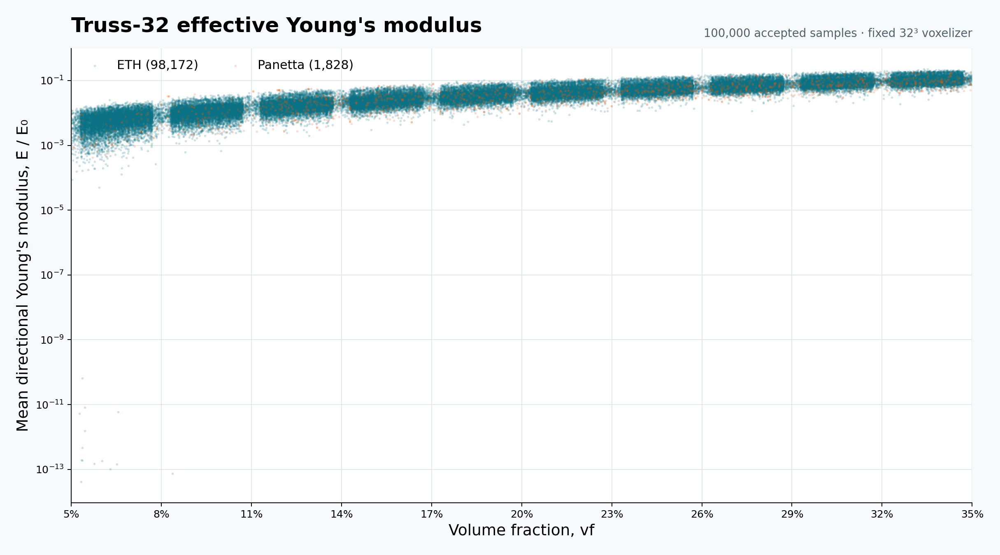
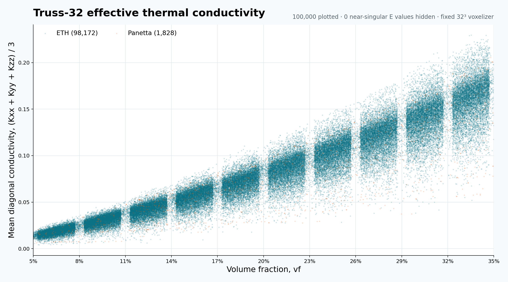
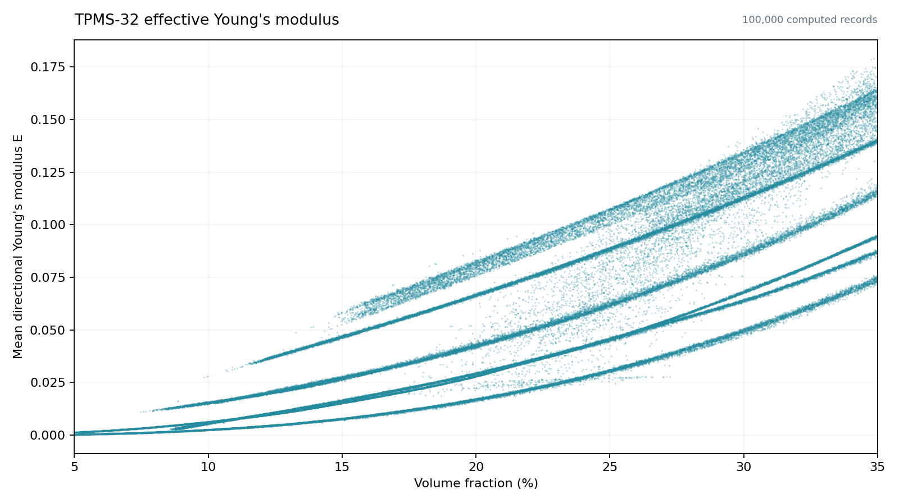
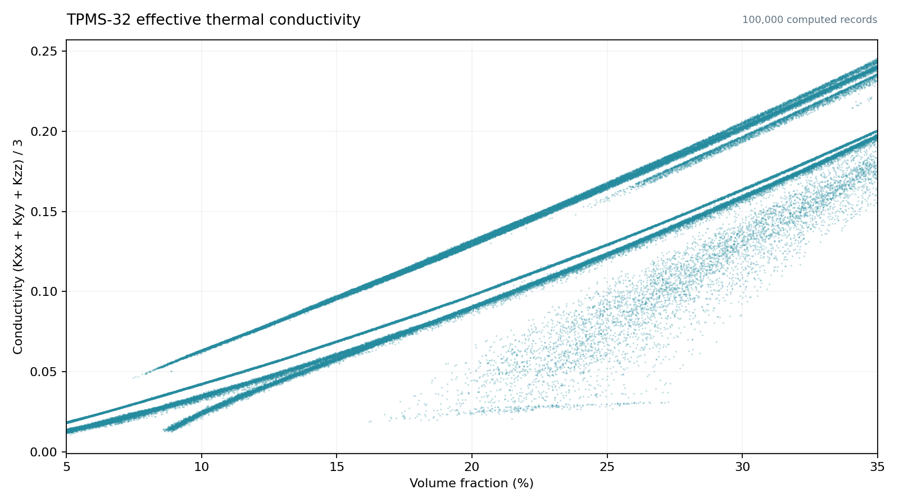

LatticeVerse
Loading topologies…
Loading topology skeletons…
No matching topologiesTry a different source or search term.
VOLUME FRACTION × EFFECTIVE PROPERTIES
Volume Fraction and Effective Properties

Download PNG

Download PNG
PARAMETRIC SHELL LATTICE
Shell Gallery
One Shell geometry per selected Truss topology. PSL parameters (diameter, joint smoothness, and shell thickness) are tuned per skeleton toward VF ≈ 20%. Screening checks VF, 32³ boundary contact, solid/surface connectivity, skeleton coverage, and named symmetry. Shell elastic and thermal properties have not been computed.
Loading Shell results…
20 simplest topologies
20 most complex topologies
Shell Gallery
Loading Shell records…
Loading Shell topology catalog…
VOLUME FRACTION × EFFECTIVE PROPERTIES
Volume Fraction and Effective Properties
 Download PNG
Download PNG
 Download PNG
Download PNG
TPMS Gallery
Loading solved records…
Volume Fraction and Effective Properties

Download PNG

Download PNG